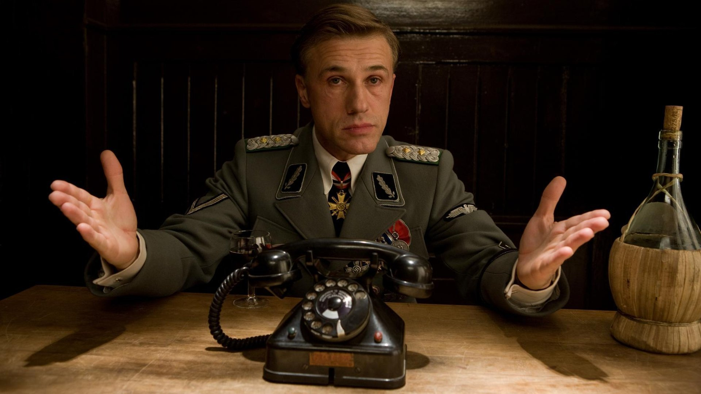
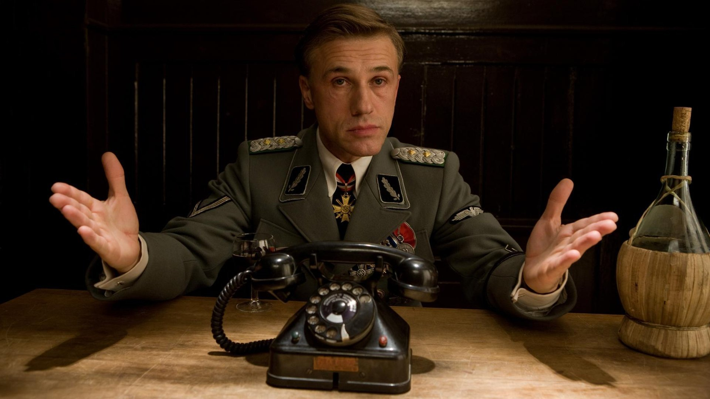
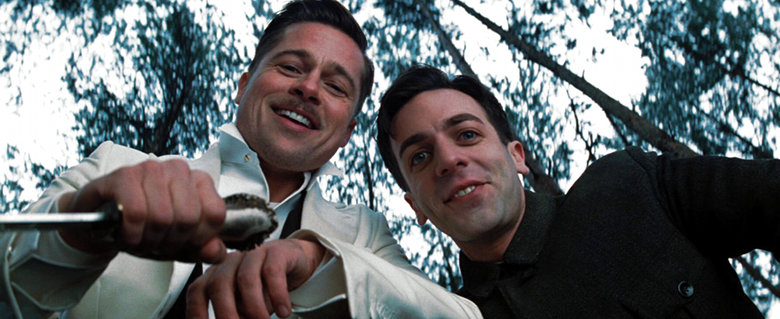
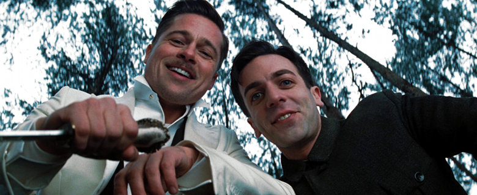

Bastardos Inglórios

Sinopse
Em Bastardos Inglórios, na Segunda Guerra Mundial, a França está ocupada pelos nazistas. O tenente Aldo Raine (Brad Pitt) é o encarregado de reunir um pelotão de soldados de origem judaica, com o objetivo de realizar uma missão suicida contra os alemães. O objetivo é matar o maior número possível de nazistas, da forma mais cruel possível. Paralelamente Shosanna Dreyfuss (Mélanie Laurent) assiste a execução de sua família pelas mãos do coronel Hans Landa (Christoph Waltz), o que faz com que fuja para Paris. Lá ela se disfarça como operadora e dona de um cinema local, enquanto planeja um meio de se vingar.
O motivo de eu ter escolhido esse filme, porque ele é um filme que eu gosto muito e me marcou muito na epoca que eu assiti ele, eu considero um dos melhores filmes que eu ja assisti e, na minha opinião, é um dos melhores filmes do Quentin Tarantino, que ja é um diretor renomado no meio da setima arte pela qualidade de suas produções.
 

 
